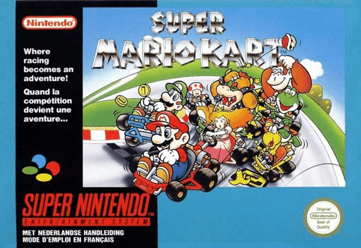
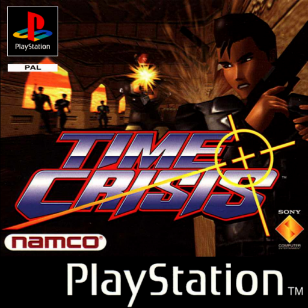
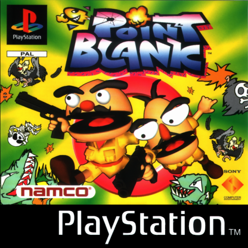
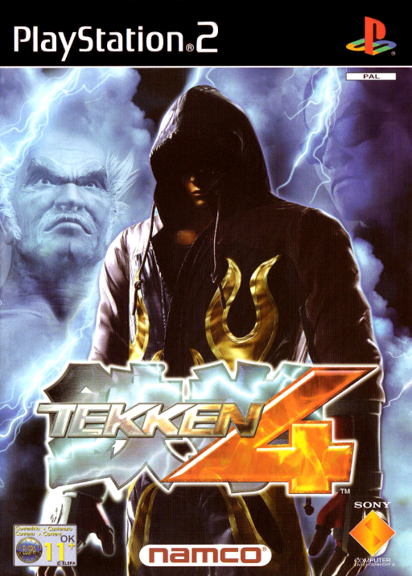
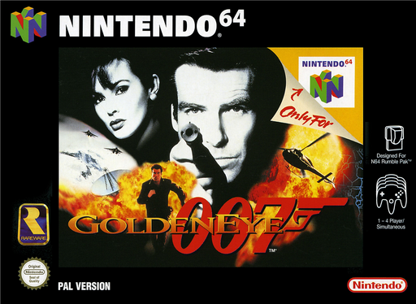
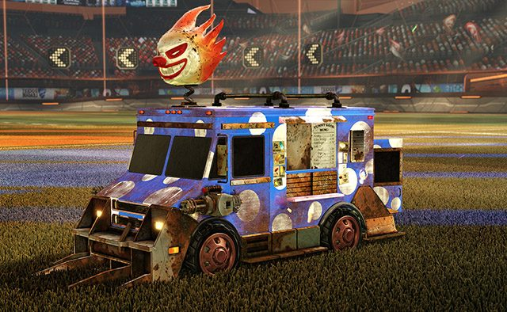
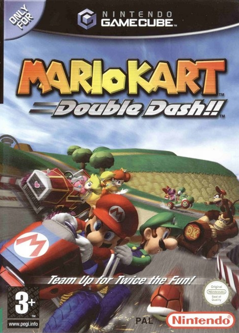
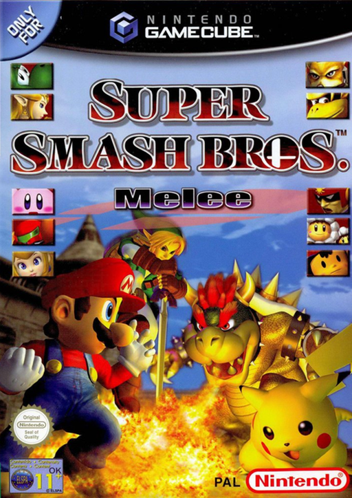
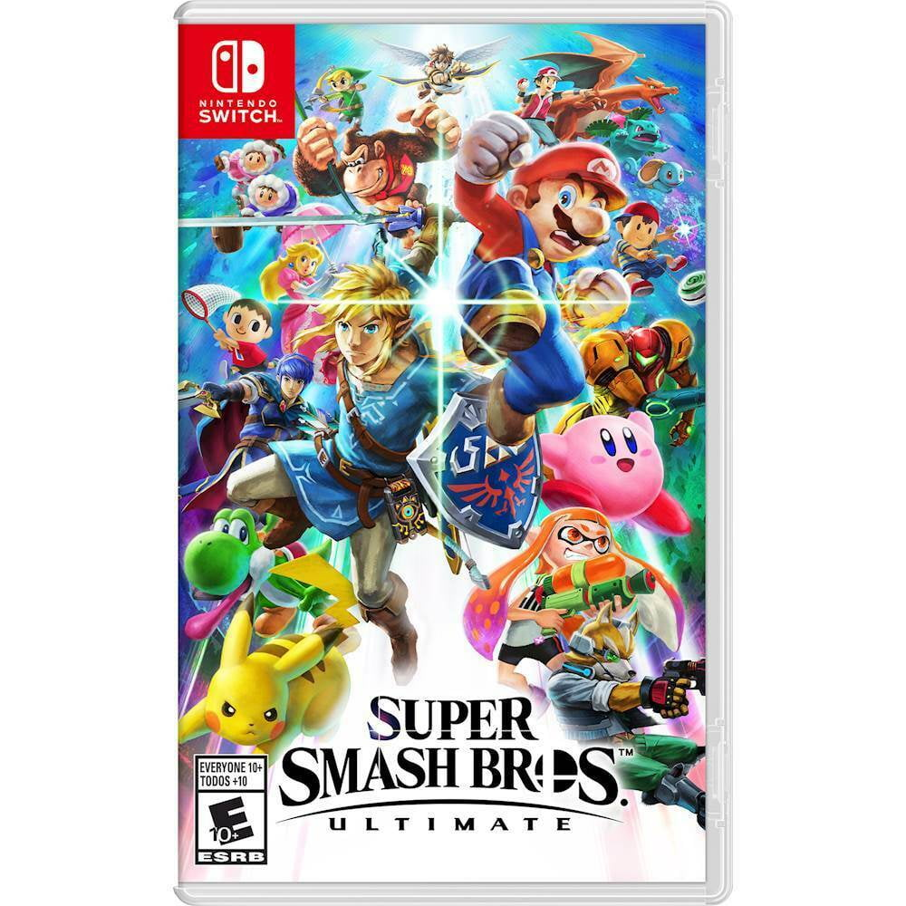

Street Fighter 2
Game information · Box-art source
.png){kind=link}
🎮 Street Fighter 2 (SNES) Complete
Gameplay
Video by VICIOGAME Retro Games
A little credit where it’s due
Game artwork, names and video belong to their respective owners. This community event page is not affiliated with or endorsed by the game publishers, console manufacturers or video creators.
Release years refer to the first release of the console edition shown, rather than the first arcade release or a specific country. The console stations are illustrative; the hardware available on the day is still to be confirmed.
Previews are short segments of YouTube videos played through the official embedded player. The original videos, attribution and controls remain available. Video availability may change. Rocket League uses promotional artwork from PlayStation.Blog; the other games use box art.
Game facts and the media sources below were checked on 19 October 2026. Historical information links are provided for further reading.
Game information · Box-art source
🎮 Street Fighter 2 (SNES) Complete
Gameplay
Video by VICIOGAME Retro Games

Game information · Box-art source
Super Mario Kart (SNES)
Playthrough
Video by NintendoComplete

Game information · Box-art source
Super Mario World (SNES) Playthrough -
NintendoComplete
Video by NintendoComplete

Game information · Box-art source
TIME CRISIS (1997) PS1 4K60ᶠᵖˢ | Full Game
- Gameplay Movie Walkthrough【4K UHD】
Video by Weiss Network TV




Game information · Promotional artwork source
Rocket League - Announce Trailer |
PS4
Video by PlayStation


Game information · Box-art source
Mario Kart 8 Deluxe Overview Trailer -
Nintendo Switch
Video by Nintendo of America

Game information · Box-art source
Mario Kart: Double Dash Gameplay (GameCube)
1080p HD No Commentary
Video by Game Footage Archive

Game information · Box-art source
Longplay of Super Smash Bros. Melee
[NEW]
Video by LongplayArchive

Game information · Box-art source
Super Smash Bros. Ultimate - Overview
Trailer feat. The Announcer - Nintendo Switch
Video by Nintendo of
America
.png){kind=link}
.png){kind=link}
%20(En,Fr,De).png){kind=link}
%20(En,Fr,De).png){kind=link}
%20(En,Fr,De,Es,It)%20(v1.00).png){kind=link}
.png){kind=link}
%20(En,Fr,De,Es,It).png){kind=link}

%20(En,Fr,De,Es,It).png){kind=link}
.png){kind=link}